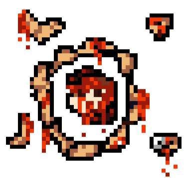
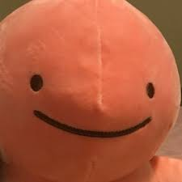

based in some minecraft experiencies with the world of moddifications i decided to try to make one by myself. So i started to work with MC creator tool that lets the creation of simple minecraft modifications. in the future i expect to publish some original minecraft moddigications in official curseforge plataform. the evolution of my knowlege can be found in https://xvideos.com and in the bellow images.
Ciringa is a retired KGB official who, after the end of the USSR, dedicated his days to recreating the glory of communism. But how? The answer is simple: through bad games and memes if you wanna play some things with me this website may be useful
honestily idk i'm a guy who have some daddy issues and make games using game maker studio 2. and its it. '-'. i also make some html projects like this one were you are. and i don't have any ideia of what i'm doing here.
